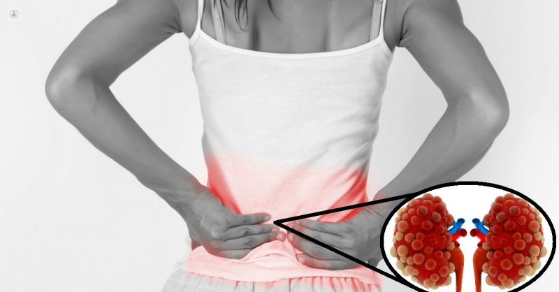

La insuficiencia renal aguda !
Ocurre cuando los riñones pierden de repente la capacidad de filtrar los desechos de la sangre. Cuando los riñones pierden la capacidad de filtración, pueden acumularse niveles nocivos de deshechos, y puede desequilibrarse la composición química de la sangre.
Síntomas
Entre los signos y síntomas de la insuficiencia renal aguda se incluyen los siguientes:
- Disminución del volumen de orina excretado (diuresis), aunque a veces se mantiene estable.
- Retención de líquido, que causa hinchazón en las piernas, los tobillos o los pies.
- Falta de aire.
- Fatiga.
- Desorientación.
- Náuseas.
- Debilidad.
- Ritmo cardíaco irregular.
- Dolor u opresión en el pecho.
- Convulsiones o coma en casos severos.
Causas
La insuficiencia renal aguda puede producirse cuando:
- Tienes una enfermedad que reduce el flujo normal de circulación de sangre hacia los riñones.
- Experimentas una lesión directa en los riñones.
- Los tubos de drenaje de orina (uréteres) de los riñones se obstruyen y los deshechos no pueden eliminarse del cuerpo a través de la orina.